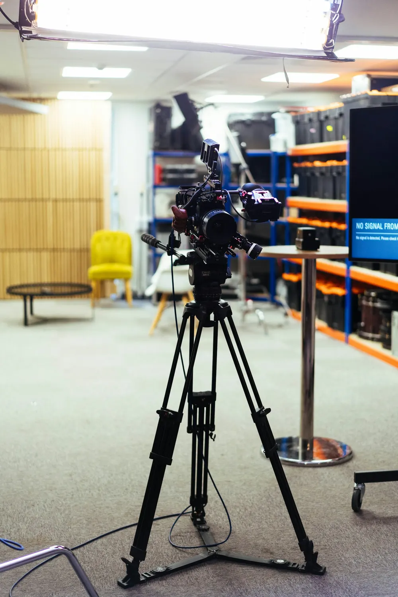
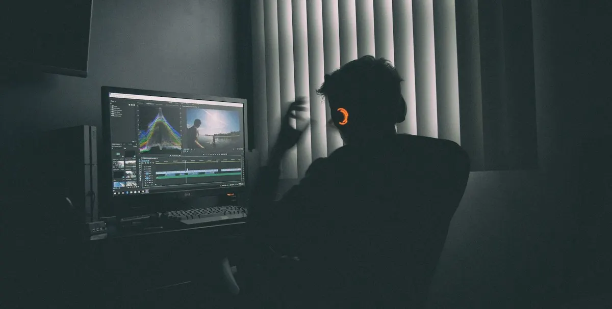
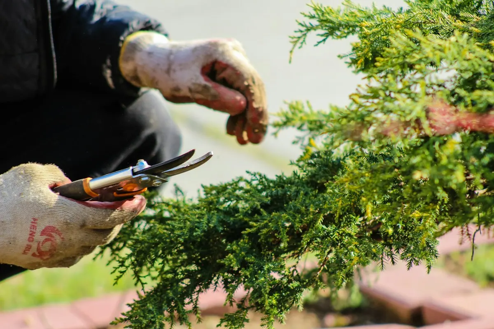
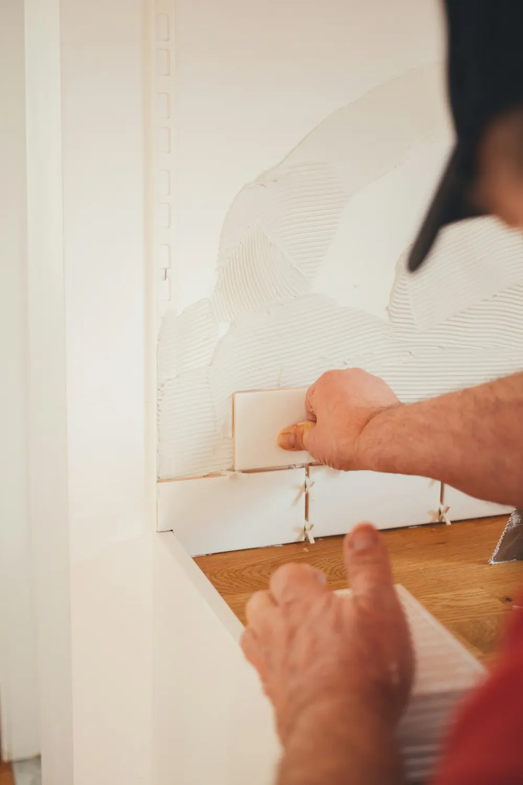

Income statement (DRE)DRE gerencial
From gross revenue to EBITDA, built on Sankhya goals with drill-down to each account.Da receita bruta ao EBITDA, montada sobre as metas do Sankhya, com detalhamento por conta.
I build dashboards, KPIs, SQL and automations that show what you need to make decisions based on real data from your business. Desenvolvo dashboards, indicadores, SQL e automações que mostram o que você precisa para tomar decisões com base em dados reais do seu negócio.
Sample data.Dados ilustrativos.
Each project starts with the question a manager needs answered, then the SQL that answers it inside Sankhya. Cada projeto começa pela pergunta que o gestor precisa responder e depois pelo SQL que responde isso dentro do Sankhya.
From gross revenue to EBITDA, built on Sankhya goals with drill-down to each account.Da receita bruta ao EBITDA, montada sobre as metas do Sankhya, com detalhamento por conta.
Weekly cash balance, with the next three weeks projected.Saldo semanal de caixa, com as próximas três semanas projetadas.
Overdue amounts by age, so collections knows where to start.Valores em atraso por faixa de dias, para a cobrança saber por onde começar.
Daily output across six weeks, so slow days stand out at a glance.Produção diária em seis semanas, com os dias fracos visíveis de cara.
The ERP work that keeps the numbers right.O trabalho no ERP que mantém os números certos.
Illustrative numbers. Client dashboards stay confidential.Números ilustrativos. Os painéis dos clientes são confidenciais.
Interactive dashboards inside Sankhya itself, with filters, drill-down and export.Painéis interativos dentro do próprio Sankhya, com filtros, detalhamento e exportação.
Accurate figures for revenue, raw material cost and profit margin, each one traced back to its source.Indicadores precisos de faturamento, custo de matéria-prima e margem de lucro, com cada número rastreado até a origem.
Complete HR and production indicators, so each area can follow its own results.Indicadores completos de RH e de produção, para cada área acompanhar o próprio resultado.
Goals vs. actuals and sales by rep, customer, region and product, at the level of detail management needs.Metas x realizado e vendas por vendedor, cliente, região e produto, no nível de detalhe que a gestão precisa.
At TV Gazeta I ran master control, a room full of monitors and equipment where every second on air depends on the operator. I also worked as a camera operator and video editor. Na TV Gazeta operei o controle mestre, uma sala cheia de monitores e equipamentos onde cada segundo no ar depende do operador. Também trabalhei como cinegrafista e editor de vídeo.


Master control taught me to watch many signals at once and act before a problem reaches the viewer. A good dashboard does the same job for a business. O controle mestre me ensinou a acompanhar muitos sinais ao mesmo tempo e agir antes que o problema chegue ao telespectador. Um bom dashboard faz o mesmo por uma empresa.
In Hyannis, Massachusetts, I spent years in hotel maintenance, grounds and landscaping, and a high-volume kitchen. I also install ceramic tile. Em Hyannis, Massachusetts, passei anos na manutenção de hotel, em áreas externas e paisagismo e numa cozinha de alto volume. Também faço assentamento de piso cerâmico.


Hero1 Tecnologia e Negócios
TV Gazeta
Days Inn, Hyannis MA
TGI Fridays, Hyannis MA
Available for systems and data analyst roles and Sankhya projects. I answer in Portuguese or English. Disponível para vagas de analista de sistemas e de dados e para projetos Sankhya. Respondo em português ou inglês.